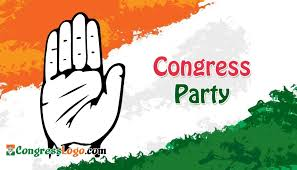

The Indian National Congress
The Indian National Congress (INC), colloquially the Congress Party, or simply the Congress, is a political party in India with deep roots in most regions of India. Founded on 28 December 1885, it was the first modern nationalist movement to emerge in the British Empire in Asia and Africa.[b][32] From the late 19th century, and especially after 1920, under the leadership of Mahatma Gandhi, the Congress became the principal leader of the Indian independence movement.[33] The Congress led India to independence from the United Kingdom,[c][34][d][35] and significantly influenced other anti-colonial nationalist movements in the British Empire.[e][32]
The INC is a "big tent" party that has been described as sitting on the centre of the Indian political spectrum.[10][20][36] The party held its first session in 1885 in Bombay where W.C. Bonnerjee presided over it.[37] After Indian independence in 1947, Congress emerged as a catch-all and secular party, dominating Indian politics for the next 50 years. The party's first prime minister, Pandit Jawaharlal Nehru, led the Congress to support socialist policies by creating the Planning Commission, introducing Five-Year Plans, implementing a mixed economy, and establishing a secular state. After Nehru's death and the short tenure of Lal Bahadur Shastri, Indira Gandhi became the leader of the party. In the 17 general elections since independence, it has won an outright majority on seven occasions and has led the ruling coalition a further three times, heading the central government for more than 54 years. There have been six prime ministers from the Congress party, the first being Jawaharlal Nehru (1947–1964), and the most recent being Manmohan Singh (2004–2014). Since the 1990s, the Bharatiya Janata Party has emerged as the main rival of the Congress in both national and regional politics.
In 1969, the party suffered a major split, with a faction led by Indira Gandhi leaving to form the Congress (R), with the remainder becoming the Congress (O). The Congress (R) became the dominant faction, winning the 1971 general election by a huge margin. From 1975 to 1977, Indira Gandhi declared a state of emergency in India, resulting in widespread oppression and abuses of power. Another split in the party occurred in 1979, leading to the creation of the Congress (I), which was recognized as the Congress by the Election Commission in 1981. Under Rajiv Gandhi's leadership, the party won a massive victory in the 1984 general elections, nevertheless losing the election held in 1989 to the National Front. The Congress then returned to power under P. V. Narasimha Rao, who moved the party towards an economically liberal agenda, a sharp break from previous leaders. However, it lost the 1996 general election and was replaced in government by the National Front. After a record eight years out of office, the Congress-led coalition known as the United Progressive Alliance (UPA) under Manmohan Singh formed a government the 2004 general elections. Subsequently, the UPA again formed the government after winning the 2009 general elections, and Singh became the first prime minister since Indira Gandhi in 1971 to be re-elected after completing a full five-year term. However, under the leadership of Rahul Gandhi in the 2014 general election, the Congress suffered a heavy defeat, winning only 44 seats of the 543-member Lok Sabha (the lower house of the Parliament of India). In the 2019 general election, the party failed to make any substantial gains and won 52 seats, failing to form the official opposition yet again. In the 2024 general election, the party performed better-than-expected, and won 99 seats, forming the official opposition with their highest seat count in a decade.[38][39]
On social issues, it advocates secular policies that encourage equal opportunity, right to health, right to education, civil liberty, and support social market economy, and a strong welfare state. Being a centrist party, its policies predominantly reflected balanced positions including secularism, egalitarianism, and social stratification. The INC supports contemporary economic reforms such as liberalisation, privatisation and globalization. A total of 61 people have served as the president of the INC since its formation. Sonia Gandhi is the longest-serving president of the party, having held office for over twenty years from 1998 to 2017 and again from 2019 to 2022 (as interim). Mallikarjun Kharge is the current party president. The district party is the smallest functional unit of Congress. There is also a Pradesh Congress Committee (PCC), present at the state level in every state. Together, the delegates from the districts and PCCs form the All India Congress Committee (AICC). The party is additionally structured into various committees and segments including the Working Committee (CWC), Seva Dal, Indian Youth Congress (IYC), Indian National Trade Union Congress (INTUC), and National Students' Union of India (NSUI). The party holds the annual plenary sessions, at which senior Congress figures promote party policy.